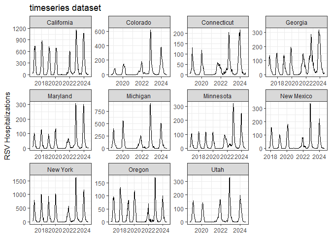
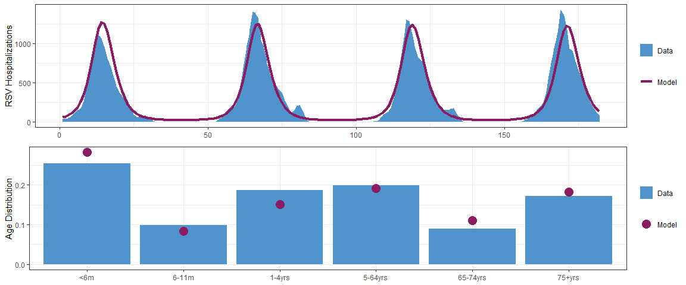
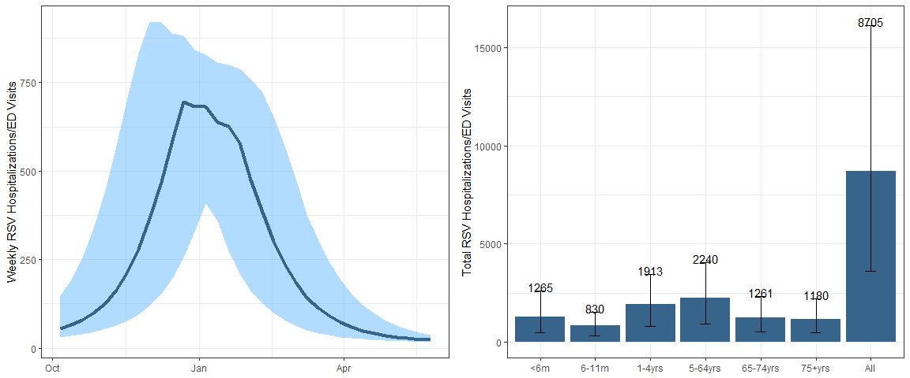

The goal of R.Scenario.Vax is to fit a deterministic, compartmental transmission model to RSV hospitalization data and provide scenario projections for the number of hospitalizations averted due to new immunization products.
Installation
You can install the development version of R.Scenario.Vax from GitHub with:
# install.packages("remotes")
remotes::install_github("chelsea-hansen/R.Scenario.Vax")Example
Here we will walk through an example using data from New York state.
Sample Data
The package includes 2 built-in data sets based on data from RSV-Net.
timeseries: Weekly time series of RSV hospitalizations in each state (all ages)age_distribution: The proportion of RSV hospitalizations in each age group (based on the 2018-19 and 2019-20 seasons only)
Notes:
RSV-Net provides data on RSV hospitalization rates. We have converted these to an approximate number of hospitalizations for use in the model.
RSV-Net did not include data for children until 2018. For the states which contributed data for adults prior to 2018, simulated data for children has been added based on the weekly average RSV hospitalization rate during the 2018-19 and 2019-20 RSV seasons.

Step 1: Retrieve starting values and fixed parameters
The get_data function will retrieve the fixed parameter values as well as the population data needed to run the model. This function returns a list with 3 values. 1. Fixed parameters 2. Initial values for model compartments 3. Vectorized version of 2 from above
library(R.Scenario.Vax)
ny_data = get_data(state_or_county="state",state_abbr="NY",county_name=NULL)
fixed_parameters = ny_data[[1]]
yinit = ny_data[[2]]
yinit.vector = ny_data[[3]]Step 2: Fit model to data
the fit_model function will find the best fit parameters using maximum likelihood estimation. The model will fit 7 parameters in total. But first we will extract the data for New York from the sample data sets. We also only want to fit to data before the COVID-19 pandemic. The function will produce a figure when the fitting is complete showing the fit to the timeseries and age distribution data.
timeseries_ny = timeseries %>% filter(state=="New York",date<'2020-04-01')
age_distribution_ny = age_distribution %>% filter(state=="New York")
fitNY = fit_model(time_series = timeseries_ny$value,
age_dist = age_distribution_ny$proportion,
parmset = fixed_parameters,
yinit = yinit,
yinit.vector = yinit.vector)
Step 3: Scenario Projections
Once you have the fitted parameters use the scenario_projection function to run scenario projections for the number of RSV hospitalizations based on the number of immunizations administered. We are only running one example here, but you can run many scenarios
scenarioA = scenario_projection(fitted_parms = fitNY,
parmset = fixed_parameters,
yinit=yinit,
yinit.vector=yinit.vector,
data_start = '2016-10-08',
projection_start = '2024-10-01',
projection_end = '2025-06-01',
senior_start = '2024-08-01',
senior_end = '2025-05-01',
senior_doses = 500000,
senior_doses_last_year = 1000000,
maternal_start = '2024-09-01',
maternal_end = '2025-01-31',
maternal_doses = 50000,
monoclonal_catchup_start = '2024-10-01',
monoclonal_catchup_end = '2025-03-01',
monoclonal_catchup_doses = 75000,
monoclonal_birth_start = '2024-10-01',
monoclonal_birth_end = '2025-03-01',
monoclonal_birth_doses = 75000,
scenario_name="Scenario A",
confidence_intervals = TRUE
)